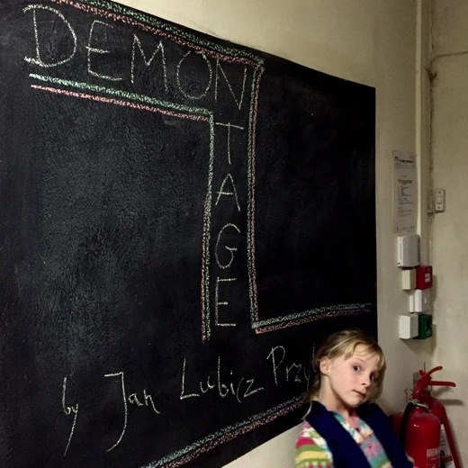
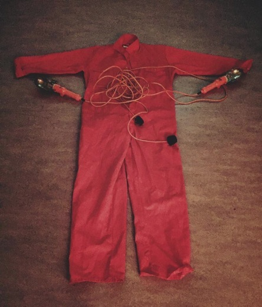
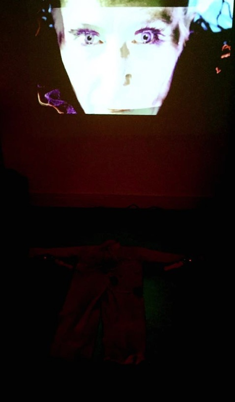
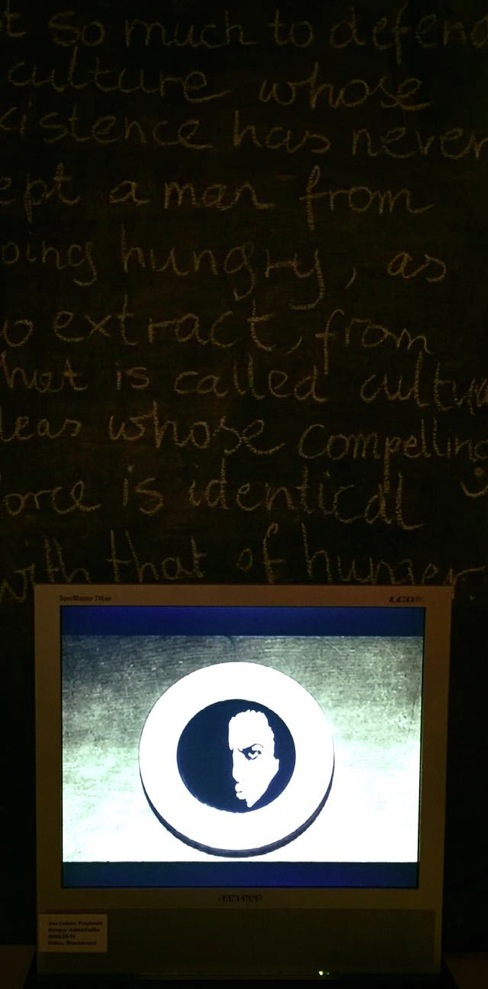

His interest in cutting and merging, dividing and clashing, in editing of all possible footage (film, life, thought), made him expose works of art he created while working in cooperation with other artists, often hiding himself under a role of an editor, hidden spirit of the artwork of someone else.
The film industry produced a peculiar role of an editor: treated as technician, operator of an editing programme, an additive to a image reproducing machine or computer. But we know since the time of Duchamp that choice is everything, choosing is creating. Meaning comes later, editing comes first. Eisenstein wrote that "film IS editing". The demon of editing is now exposed.



D_E_M_O_N_TAGE
Postproduction of culture, reprogramming of self and others, changing ideas and images into working machines, all that troubles Jan.
Art is for Jan always a contextual work, a relational approach, easily perceived in his cooperation with prominent artists like Krystian Lupa (in the field of theater), Wiktor Gutt (their visual artworks was exhibited in National Museum of Art, MOMA Warsaw), or Pawel Ferdek (in the field of film, nomination for European Film Award for short documentary they made about a bunch of guys who organize fish fights).
This exhibition consists of minimal video projections, each chosen from his archives exclusively for Cork and in the context of Jan’s observations during the residency in Ireland.
Jan Lubicz Przyluski. Born 1979, lives and works in Warsaw.

Curated by: Pati Klich
Jan Lubicz Przyluski, post-performance
Jan Lubicz Przyluski, Black Sun + instalacja
Jan Lubicz Przyluski, Hungry Artist (Fe 2015), video and blackboard

Wystawa >>
DE-MON-TAGE
2010
wystawa indywidualna, Cork Artists’ Collective, Irlandia